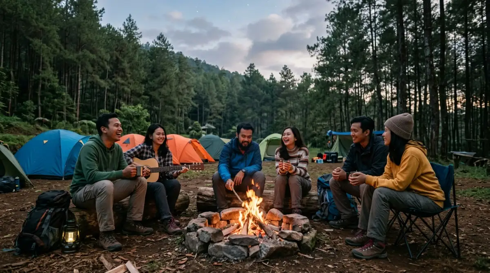
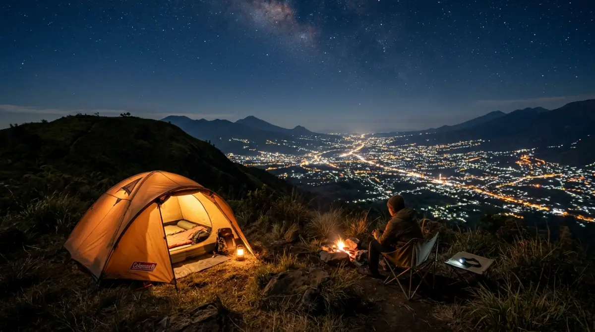

Malang Raya menyimpan banyak surga tersembunyi yang sangat bersahabat untuk para pendatang baru di dunia camping.Di tengah tumpukan deadline dan layar laptop yang menyala belasan jam sehari, rasa pengen camping seringkali muncul layaknya alarm tubuh yang meminta rehat. Bayangkan akhir pekan terlewat begitu saja di atas kasur, sementara di luar sana, kabut tipis dan aroma tanah basah sehabis hujan sedang menunggu untuk dinikmati.
Jangan sampai kita menua dengan memori yang hanya berisi rutinitas rapat dan kemacetan jalanan, lalu menyesal karena lupa memberi jeda pada diri sendiri. Kebahagiaan sederhana seperti menyeruput kopi panas di depan tenda sering kali tertunda oleh alasan “takut ribet” atau “belum punya pengalaman”.
Padahal, Malang dan sekitarnya menyimpan banyak surga tersembunyi yang sangat bersahabat untuk para pendatang baru. Mumpung fisik masih kuat dan kesempatan masih ada, mari wujudkan angan-angan itu sebelum momen berharga ini menguap menjadi sekadar rencana wacana tak berujung.
Mengapa Malang Adalah Pilihan Tepat untuk Memulai?
Bagi Kamu yang sehari-hari berkutat dengan hiruk-pikuk dunia kerja—entah itu mengejar target sales atau menyelesaikan laporan akhir bulan—alam bebas menawarkan ruang untuk kalibrasi ulang. Malang Raya, dengan kontur geografisnya yang dikelilingi pegunungan, menyajikan perpaduan sempurna antara udara sejuk dan aksesibilitas.
Sebagai pemula, ketakutan terbesar biasanya berpusat pada dua hal: keamanan dan kenyamanan fasilitas dasar seperti toilet atau sumber air. Di sinilah letak keunggulan kawasan Malang dan Batu. Banyak pengelola kawasan wisata alam yang sudah menerapkan standar operasional mumpuni. Kamu tidak perlu melakukan survival ekstrem layaknya di program televisi. Di sini, berkemah bisa dilakukan dengan elegan, aman, dan tetap memberikan esensi kembali ke alam yang otentik.
5 Spot Mengobati Rasa Pengen Camping di Malang Raya
Jika notifikasi ponsel sudah mulai terasa memuakkan, ini saatnya mengemasi ransel. Berikut adalah lima rekomendasi lokasi yang sangat aman bagi pemula, di mana Kamu bisa memarkir kendaraan dan langsung mendirikan tenda tanpa harus mendaki berjam-jam.
1. Bedengan, Selorejo: Simfoni Gemercik Sungai dan Hutan Pinus
Bumi Perkemahan Bedengan adalah legenda hidup bagi para penikmat alam di Malang. Terletak di Desa Selorejo, Kecamatan Dau, tempat ini ibarat oase bagi karyawan yang ingin log out sejenak dari dunia digital. Akses jalannya sudah beraspal mulus hingga ke area parkir.
Daya tarik utama Bedengan adalah aliran sungai dangkal berbatu yang jernih, membelah rindangnya hutan pinus. Mendirikan tenda di pinggir sungai ini rasanya seperti memiliki mesin white noise alami yang langsung menidurkan saraf-saraf tegang. Fasilitasnya sangat memadai; warung makan berjejer rapi 24 jam, musala bersih, dan ketersediaan colokan listrik di beberapa titik membuat Kamu tidak perlu panik jika baterai ponsel habis. Tempat ini sangat direkomendasikan bagi Kamu yang baru pertama kali menyentuh pasak dan frame tenda.
2. Bumi Perkemahan Coban Rondo: Fasilitas Lengkap Anti Repot
Bergeser sedikit ke arah Pujon, Coban Rondo bukan sekadar tentang air terjunnya yang ikonik. Area perkemahannya sangat luas dan sering dijadikan langganan untuk kegiatan outbound korporat karena kontur tanahnya yang datar dan berumput tebal.
Bagi Kamu yang pengen camping tapi membawa anak kecil atau keluarga, Coban Rondo adalah zona aman absolut. Pengelolaannya sangat profesional. Keamanannya dijaga ketat, toiletnya melimpah dengan air bersih, dan jarak antar tenda bisa diatur sedemikian rupa sehingga privasi tetap terjaga. Jika Kamu bosan duduk di tenda, ada banyak aktivitas tambahan seperti memanah, labirin, hingga kafe tematik yang bisa diakses hanya dengan berjalan kaki santai. Ini adalah bentuk kompromi terbaik antara menikmati alam dan mempertahankan kenyamanan modern.
3. Batu Sunrise Camp: Menikmati City Light dan Golden Hour
Jika tujuanmu melarikan diri dari rutinitas adalah untuk melihat keindahan dari sudut pandang yang lebih tinggi, maka kawasan wisata Batu menawarkan solusi brilian. Di Batu Sunrise Camp, Kamu tidak perlu repot memikul keril berat dan mendaki berjam-jam untuk mendapatkan pemandangan premium. Lokasi ini didesain sangat apik dan strategis, tidak hanya sekadar untuk tidur di dalam tenda, tetapi juga sarat akan ruang lapang yang sering digunakan untuk kegiatan experiential learning atau capacity building.
Membuka ritsleting tenda di pagi buta dan langsung disambut oleh semburat jingga matahari terbit adalah bayaran tuntas untuk segala rasa lelahmu. Malam harinya, hamparan city light kota Batu yang gemerlap menjadi teman mengobrol yang jauh lebih asyik daripada menatap grup WhatsApp kantor. Pengelola di kawasan ini biasanya sudah menyiapkan paket lengkap, jadi Kamu tinggal datang membawa pakaian ganti. Sangat cocok untuk mengunci momen liburan singkat di akhir pekan atau menikmati promo pergantian tahun bersama lingkaran pertemanan terdekat.

Pemandangan city light gemerlap Kota Batu dari area perkemahan menjadi daya tarik utama bagi para camper.4. Pantai Goa Cina: Syahdunya Angin Laut di Selatan Malang
Siapa bilang camping selalu identik dengan gunung dan udara dingin yang menusuk tulang? Jika Kamu lebih menyukai suara ombak dan pasir putih, wilayah Malang Selatan adalah jawabannya. Pantai Goa Cina adalah salah satu spot kemah pesisir yang ramah pemula.
Lokasinya mudah dijangkau dengan kendaraan roda dua maupun empat. Area berkemahnya dinaungi oleh rimbunnya pohon ketapang dan cemara udang, sehingga Kamu tidak akan terpanggang matahari saat siang hari. Menikmati ikan bakar segar hasil tangkapan nelayan lokal di depan tenda sambil menunggu senja turun adalah pengalaman healing tingkat tinggi. Toilet dan kamar bilas tersedia cukup banyak, sehingga Kamu bisa membersihkan diri dari lengketnya air garam dengan nyaman sebelum tidur.
5. Lembah Indah Malang: Kemewahan Berkemah di Kaki Gunung Kawi
Bagi Kamu yang rasa “pengen camping”-nya besar namun toleransinya terhadap ketidaknyamanan sangat rendah, konsep glamping atau campervan park di Lembah Indah Malang adalah titik awal yang sempurna. Terletak di lereng Gunung Kawi, tempat ini menawarkan pemandangan perbukitan hijau yang mengingatkan kita pada lanskap pegunungan di Eropa.
Kamu bisa menyewa tenda glamping yang sudah dilengkapi kasur empuk, atau membawa mobil dan parkir langsung di sebelah area tenda (campervan style). Fasilitas di sini setara dengan resort, namun dengan vibes alam bebas yang kental. Ini adalah transisi paling mulus dari kebiasaan menginap di hotel bintang menuju aktivitas di alam terbuka.
Persiapan Mental dan Logistik Sederhana
Ibarat menyusun proposal proyek, berkemah juga butuh perencanaan dasar. Tidak perlu langsung membeli peralatan mahal bernilai jutaan rupiah. Di Malang, bertebaran tempat penyewaan alat outdoor dengan kualitas premium dan harga terjangkau. Sewalah tenda tipe dome dengan lapisan ganda (double layer) agar Kamu tidak kedinginan saat embun turun.
Bawa pakaian yang menyerap keringat untuk siang hari, dan jaket tebal yang memadai untuk malam hari. Jangan lupa sediakan kantong plastik besar untuk membawa pulang sampahmu. Menjadi pemula bukan berarti kita boleh abai pada etika lingkungan. Prinsip meninggalkan lokasi dalam keadaan bersih adalah hukum tak tertulis yang membedakan pendaki berkelas dengan turis biasa.
Penutup: Jangan Tunda Bahagiamu
Pada akhirnya, rasa pengen camping bukanlah sekadar tren media sosial, melainkan panggilan alami dari dalam diri untuk kembali menjejakkan kaki ke bumi. Setiap akhir pekan yang berlalu adalah kesempatan yang tidak akan terulang kembali dengan energi dan waktu yang sama.
Kita tidak pernah tahu sampai kapan fisik ini sanggup diajak berpetualang. Jadi, sebelum tumpukan stres menggerogoti kesehatan mental dan fisikmu, ambil cuti sehari, hubungi teman-temanmu, dan mulailah berkemas. Alam Malang sudah menggelar karpet hijaunya, siap menyambutmu pulang untuk beristirahat.
FAQ